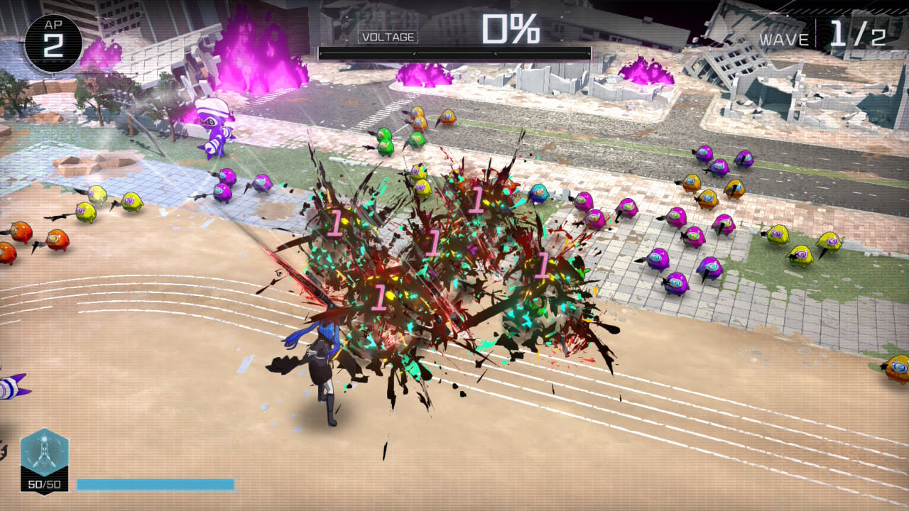
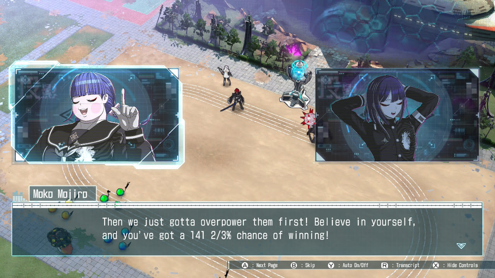
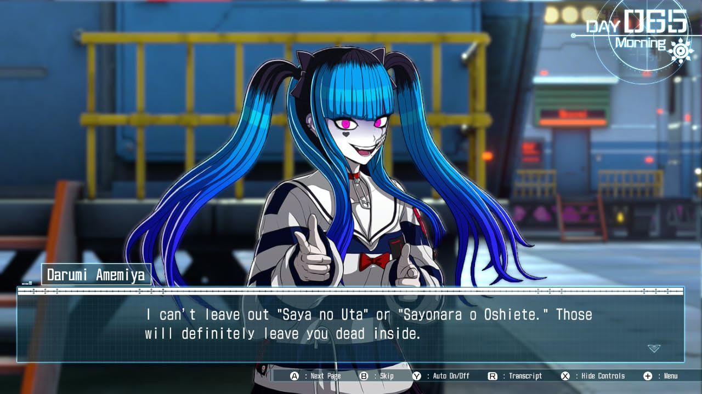
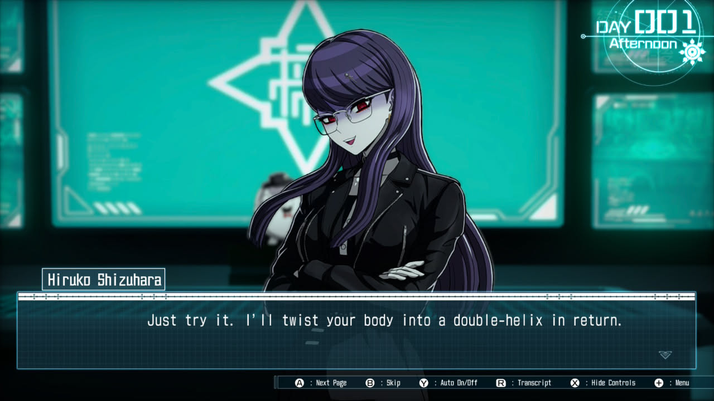

1game1week - Week 52 (12/31/25) - The Hundred Line: Last Defense Academy
Hey all! It's week 52! (12/25 -> 12/31)
It's finally over, isn't it? After 52 weeks, 1g1w 2025 is over!
This has been... a slightly eventful year for me / my family. Some in a good way, some in a really bad way. I'm at least glad to say that the bad ways were all sorted out and things are more or less back to normal.
Most the things I'm thankful for I'm probably keeping private, but I'm honestly very thankful for all the people who have accompanied me through this year with my little ramblings about games. Diary, novel, whatever you may think it is, it's always sweet hearing that you've read my posts. I really do appreciate comments, reacts, DMs. Thank you all. I started these posts because I wanted to get rid of most of my socials as a "scrolling" platform, but keep an overall window to "me" open just so you wouldn't think I'm dead or something. Thank you for reading my silly little posts.
Please take care of me next year as well. I'll continue playing slop for a good while. Happy New Year!
Another thing I'm always going to be publicly thankful for is gaming. Even if there might be a decline in what gaming is these days, or in what ownership is, or the overall quality, there's always something really awesome just around the corner. Like... today's game!
Anyways!
New games from 12/25 -> 12/31:
HEART of CROWN (Switch)
Bunny Garden (Switch)
Currently, my backlog is at +9 (lower is better, +2 from last week).
And onto 1g1w. Once again, a game is considered "beaten" if I've accomplished the main objective of the game.
GAME: The Hundred Line: Last Defense Academy
PLATFORM: Switch
GENRE: Strategy RPG / Visual Novel
STARTED ON: 12/1
BEATEN ON: 12/7 (but still ongoing)
TOTAL PLAYTIME: 71 hours and 19 minutes, making it the most-played game this year.
This game has taken up my entire month of December. Knowing it was going to be an incredibly long ride, I decided to hold off on playing it until now, because I'd have a lot of holiday downtime.
While I can ultimately say that was the right decision, it makes me legitimately upset I have to temporarily shelf this game to focus on other things starting next year because of how much fun I'm having.
Hundred Line is a mix of various genres and a labor of love by TooKyo Games. Kazutaka Kodaka and Kotaro Uchikoshi, who are probably most popular work is the Danganronpa franchise and the Zero Escape franchise, respectively.
After leaving Spike Chunsoft, Kodaka went on to found TooKyo, alongside Uchikoshi (Zero Escape's, Somnium Files writer / director), Masafumi Takada (Kill the Past series', Danganronpa's composer) and Rui Komatsuzaki, who worked as the character designer for various of Kodaka's games.
Hundred Line went on to nearly put TooKyo in near bankrupcy due to its insane costs associated with its development. Thankfully, due to the game's success, that is (from what I can find, anyway) no longer the case.
Needless to say, I'm really looking forward to the studio's future works.
For reference, at time of writing, I have read 40 of the 100 endings in this game.
As a game, Hundred Line merges various different gameplay elements: visual novel, tactics / strategy RPG, and what I can only really call a traditional text-based RPG (in a tabletop kind of way?)
When I say Strategy, I also don't necessarily mean something akin to Fire Emblem, though that would be a decently simply way to explain it in a single sentence or so.
Most battles in the game are Defense Battles. This means you're protecting a specific resource, oftentimes a shield generator for the titular Last Defense Academy. You're allotted a specific amount of AP (Action Points I think) every turn that you're free to spend as you see fit.
You may spend them all on one of your units who happens to be useful in the specific scenario you find yourself in, or if they have a helpful ability. For example, Hiruko Shizuhara is a character with an ability that gives her Attack +1 every time she defeats an enemy, for up to +3, every turn.
So, if she defeats an enemy, for each other action you take that turn with her, she will have +X attack. It's helpful to make her a sweeper. The beginning of the game pushes you a bit to use all your units, though, as when you use a unit once their mobility is dropped to 1. This isn't really an issue later in the game, though.
I do enjoy the tactics here, though it occasionally became a little bit stale as there's little variance in the map layout, given most tactics sections in the game take place as a Defense Battle for the school. There are a couple gimmicks here and there that change it up such as Fog (Mist) of War or having to deal with specific enemies first, but it's overall very same-y.
In addition to this, they occasionally all blended together due to the soundtrack. As much as I legitimately love Hundred Line's soundtrack, most- if not all- battles have the same three (maybe four) songs on repeat.
This is not to say the songs themselves are bad, it's just that they make Defense Battles, which already lack a little bit of identity, feel as if they have even less identity. Over the 40 different routes I'm currently at, it all starts to just kind of blend together. It would be a bit better, in my opinion, if they had different songs per battle. With that said, New Game Plus allows you to skip the battles you've already fought, so it's a little bit less pronounced here.
I would like to clarify that I very much enjoyed the tactics gameplay in Hundred Line. A lot of the fun also comes down to trying to optimize your strategy in a battle, or trying to sweep a boss in one turn, or seeing the cool animations your characters have.

One other aspect of the game is something very akin to a tabletop game blended with a text-based adventure RPG. To describe it: you are placed in a game board, and given two cards with two numbers ranging between 1 and 6. Whichever card you pick, your character moves that number to land on a space in the board.
You can land in one of three(ish) spaces: a battle space, which will give you a small skirmish, a resource space, or a chance space. For the latter two, you're given a text prompt. "You find a wallet on the ground..." kind of thing, alongside two or three options. Depending on your action, you get either a resource, move further in the board, or have something else happen such as having your total resources increase by a percentage.
This tabletop-esque gameplay is the way to gather resources around the game world which can be used to upgrade your weapons, or craft gifts. There are a few mandatory sections where the characters have to venture out of the Last Defense Academy which make you partake in this for the story's sake.
While it was honestly very fun, it could occasionally just get annoying due to RNG- sometimes, even getting the same prompt between one space to the next, the answer would be inconsistent which occasionally made me not even want to read the prompt. If I'm forced into a 50/50 either way whichever answer I choose, there's little point to me worrying about choosing the wrong one.
I will say that the game is nice enough to ask you if you'd like to skip the minigame. You don't get any resources from it, but you also don't have to do any of it. So... while it's probably not advisable, it's an option.

I think the game's writing is the real winner here, for the most part. The narrative is phenomenal and truly engaging. It unfortunately does take a tiny bit to get started, in my opinion.
As a very minor spoiler, mostly due to it being part of the marketing: after a common / first route, the game opens up (mostly) fully, letting you choose Takumi's, the main character's, decisions.
These decisions become the path to giving you 100 (mostly) different endings along various different routes. I say mostly because there's a few that are just about how Takumi reacts at the end. One particular ending for the Serial Battles route had a choice for Takumi to deliver two or three different lines.
One very cool thing, though, is that a lot of them go through various aspects of the game's lore which is otherwise unexplored in other routes- this includes things like the Boxes of Blessings/Calamity Routes.
Something I particularly like about Hundred Line is that it's obvious the writer team knew that Danganronpa thrived very well because of how fanfictionable it was. "What if X had happened? What if Makoto pulled this from the MonoMono machine? (Literally Danganronpa IF) What if XYZ?". They took that and made it, legitimately, into a game. This game is official fanfiction of itself.
While I would love to sit here and say every ending I've read is a winner, there are definitely some less than impressive endings or routes. While I'm not going to spoil anything, the Conspiracy Route is such a miss on various notes.
For starters, this route has seven different endings that are for lack of a better term, "immediate bad ends". You picked the wrong choice, so I'm killing you and rolling the credits. That's the ending.
It also simply didn't go far enough in its lore drops. There's a lot more this route could've revealed, or explored- it just didn't. It overall felt like a little bit of a waste with no real payoff just for the sake of getting eight endings closer to 100.
My biggest problem, unfortunately, is that MAJOR revelations can happen in otherwise less-than-important routes, making their impact heavily lessened in the Truth Route. It's similar to being hit with a massive spoiler by a friend.
Warning: spoilers for Danganronpa 2. Imagine that Danganronpa 2x2 has a bunch of random routes aside from the alternate scenario that was announced. You can get them at any time, from the start, without having to go through the original scenario.
So, the easiest way to place yourself in my shoes is if you randomly stumble into the "Hajime's Harem" route, and Nagito just pops up, says, "oh, by the way, it was Junko all along!". Then, Junko joins the harem and the game continues as if nothing's happened.
What? You can't just tell me that and pretend it's nothing, then expect me to have a shocked Pikachu face when you reveal it in the Truth Route. If you've already done it, whatever, who cares, I already knew, yadda yadda. But running into something like this in a "joke" (for lack of a better term) route feels like a gut punch.
This game employs what are called Story Locks. I mentioned a similar concept in the Somnium Files post (funny that they show up here, in another of Uchikoshi's games) where the game would lock progression in a particular route until I went through another specific route that would give the one I'm trying to do further context. Why not use these to shield me from "spoilers" where they're not really important to the route's overall purpose?
A couple minor grievances are also likely due to the fact I'm playing the Switch version. 720p30 Native Res for a VERY late lifecycle Switch title feels a little strange. Also, compression on the animated cutscenes leaves a whole bunch to be desired, with them looking incredibly low-res.
This is seemingly exclusive for the Nintendo Switch version. The PC version allows for higher native resolutions as well as higher frame rates (who would've thunk?). I would love a Switch 2 version to release at some point, or at least a Switch 2 patch, as I'm sure it would allow the game to truly shine on this console. They could also re-release the digital pre-order exclusive mini-novel, Hiruko Shizuhara's First Battle!
The PC version also has a few CGs that had to be censored in the Switch version in their original form.
Another of the game's strengths, in my opinion, is its characters. This is a legitimately very fun cast, even if some of them fall into extremes regarding their personalities / quirks. Everyone can probably have someone they get a laugh out of. One of my favorite characters was Moko Mojiro- a pro wrestler that constantly throws out random references I'd be a little bit ashamed to understand. Another really fun character is Darumi Amemiya, who is an eroge addict. She constantly talks about game mechanics as if it was... a game. It's almost as if it was direct director commentary, calling out random things in the game. Something I really admire about her is how much she's referencing eroge, and it's fun pointing at the screen and saying "Oh, I've read that!", lol. It makes me feel like this character is supposed to embody the writer's love for otaku culture, which this game is teeming with. The first time I saw her in battle, I laughed and smiled really wide, seeing that her weapon was a reference to Gate of Babylon. She also mentions Saya no Uta at one point in the game as a "recommendation". Funnily enough, reading Saya is incredibly rewarding for this game!
I'm really normal about Hiruko Shizuhara btw.



Overall:
Hundred Line is a phenomenal game with an amazing premise, characters, and fun gameplay. I think there's legitimately something for everyone here. I'm looking forward to what's next for TooKyo- even if it's just more Hundred Line content!

Thanks for reading! If you need to contact me for any reason, please feel free to email me at aru@hoshikawa-aru.com.